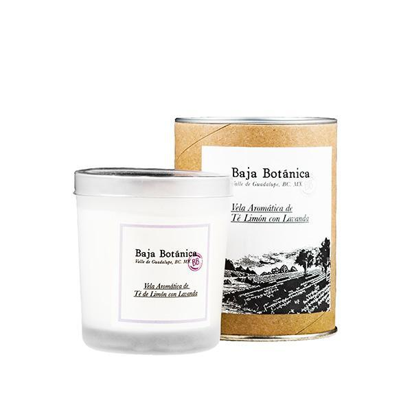

La vela aromática de té de limón y lavanda de Baja Botánica está elaborada con cera de soya que permite tener una distribución homologada de aroma sin dañar el medio ambiente. Está hecha en un envase de vidrio reutilizable y con aceites esenciales que ayudan a construir un espacio relajante y una experiencia inolvidable.
